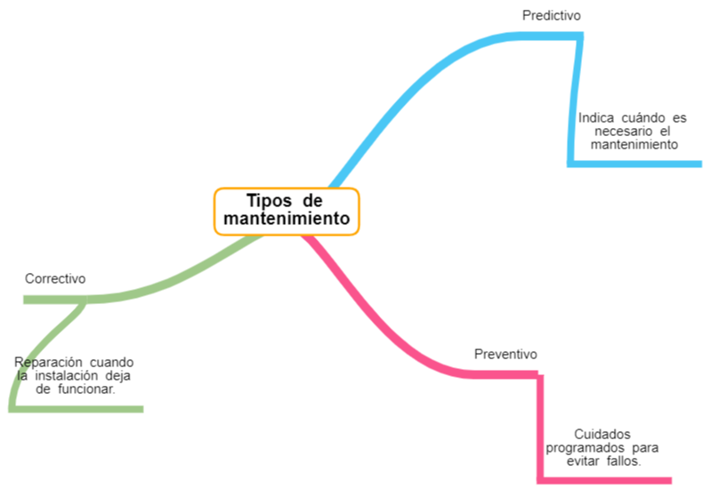

Existen tres tipos de mantenimiento: correctivo, preventivo y predictivo:
a) Mantenimiento correctivo
Se realiza cuando una instalación deja de funcionar y se requiere ponerla en marcha nuevamente. Este tipo de mantenimiento se enfoca en solucionar el problema que ha causado el fallo de la instalación. Un ejemplo común de este tipo de mantenimiento es el cambio de una bombilla fundida.
b) El mantenimiento preventivo
Tiene como objetivo evitar que la instalación falle en el futuro.
Para ello, se programan paradas de la instalación para realizar revisiones y operaciones necesarias para mantenerla en buen estado. Este tipo de mantenimiento se realiza de manera regular y programada, antes de que se produzca el fallo en cuestión.
c) El mantenimiento predictivo
Es una forma más avanzada de mantenimiento preventivo. En lugar de seguir un calendario de mantenimiento, se utilizan dispositivos que monitorean el estado de la instalación y emiten alertas cuando se detecta un problema.
De esta manera, se pueden realizar las operaciones de mantenimiento necesarias en el momento adecuado, evitando fallos inesperados y prolongando la vida útil de la instalación.
En general, esto dos últimos, el mantenimiento preventivo y predictivo son más eficaces que el correctivo, ya que permiten detectar y solucionar problemas antes de que se produzcan averías graves.
Recuerda
La planificación del mantenimiento es fundamental para garantizar el correcto funcionamiento de los sistemas automáticos.
Además, estos tipos de mantenimiento pueden ayudar a reducir los costes de reparación y aumentar la eficiencia de la instalación. Por lo tanto, es importante implementar un plan de mantenimiento adecuado para garantizar el correcto funcionamiento de las instalaciones.

Fig 3. Tipos de mantenimiento
{"id":"d47b2c54-faec-4d5d-af1b-9b29de6af89e","title":"Tipos de mantenimiento","mindmap":{"root":{"id":"ff12a129-fe72-43ca-8261-c0f2e29f3714","parentId":null,"text":{"caption":"Tipos de mantenimiento","font":{"style":"normal","weight":"bold","decoration":"none","size":20,"color":"#000000"}},"offset":{"x":0,"y":0},"foldChildren":false,"branchColor":"#000000","children":[{"id":"ab0ac8da-7d0e-47f3-98a2-8b4ff4d2734f","parentId":"ff12a129-fe72-43ca-8261-c0f2e29f3714","text":{"caption":"Preventivo","font":{"style":"normal","weight":"normal","decoration":"none","size":15,"color":"#000000"}},"offset":{"x":209.59262779696206,"y":194.39167125931505},"foldChildren":false,"branchColor":"#fa548d","children":[{"id":"1f1ce82c-b0c9-4590-a243-9d83675c00b5","parentId":"ab0ac8da-7d0e-47f3-98a2-8b4ff4d2734f","text":{"caption":"Cuidados programados para evitar fallos.","font":{"style":"normal","weight":"normal","decoration":"none","size":15,"color":"#000000"}},"offset":{"x":71.20001220703125,"y":90.20001220703125},"foldChildren":false,"branchColor":"#fa548d","children":[]}]},{"id":"f8108feb-ec7f-4ec5-8fe1-9fbc25dffabc","parentId":"ff12a129-fe72-43ca-8261-c0f2e29f3714","text":{"caption":"Predictivo","font":{"style":"normal","weight":"normal","decoration":"none","size":15,"color":"#000000"}},"offset":{"x":261.7412395564153,"y":-186.53727031878864},"foldChildren":false,"branchColor":"#4ac7f5","children":[{"id":"e63eba1a-35ed-465b-ae6b-62fe0eff5a4f","parentId":"f8108feb-ec7f-4ec5-8fe1-9fbc25dffabc","text":{"caption":"Indica cuándo es necesario el mantenimiento","font":{"style":"normal","weight":"normal","decoration":"none","size":15,"color":"#000000"}},"offset":{"x":53,"y":115},"foldChildren":false,"branchColor":"#4ac7f5","children":[]}]},{"id":"b1044221-bf2c-4b35-b81e-93eaf1e1bee4","parentId":"ff12a129-fe72-43ca-8261-c0f2e29f3714","text":{"caption":"Correctivo","font":{"style":"normal","weight":"normal","decoration":"none","size":15,"color":"#000000"}},"offset":{"x":-296,"y":110},"foldChildren":false,"branchColor":"#9fc889","children":[{"id":"a8e8f143-cf0e-4ede-8462-49f257cdf000","parentId":"b1044221-bf2c-4b35-b81e-93eaf1e1bee4","text":{"caption":"Reparación cuando la instalación deja de funcionar.","font":{"style":"normal","weight":"normal","decoration":"none","size":15,"color":"#000000"}},"offset":{"x":-17,"y":94.19998168945312},"foldChildren":false,"branchColor":"#9fc889","children":[]}]}]}},"dates":{"created":1715613726342,"modified":1715614342087},"dimensions":{"x":4000,"y":2000},"autosave":false}